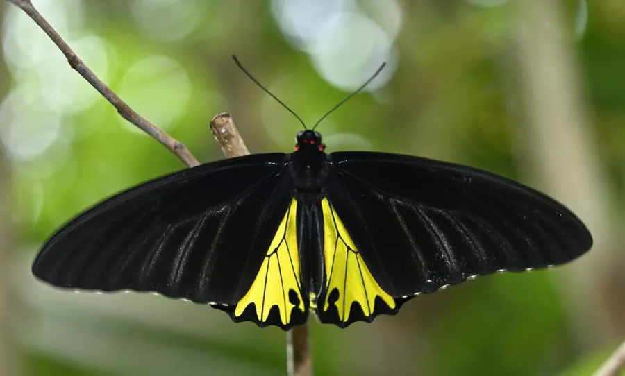

昆虫 · 动物界
裳凤蝶 Troides helena

翅展可达 15 cm 的大型凤蝶，雄蝶后翅有金黄色斑块，形态华丽，分布于南亚和东南亚，受贸易管制保护。
- 分类
- 门节肢动物门纲昆虫纲目鳞翅目科凤蝶科属裳凤蝶属
- 栖息环境
- 热带、亚热带山地森林、林缘和谷地，马兜铃生长处
- 地理分布
- 南亚、东南亚和中国南方部分地区
- 保护级别
- 暂无评估；列入 CITES 附录，贸易受管制
物种志
裳凤蝶翅展约 13–15 cm，雄蝶翅面黑色，后翅有一大片金黄色斑块，斑块内缘呈波浪状；雌蝶体型更大，翅面黑褐色，后翅金黄色区域较窄，外缘有黑色齿状纹。它和金裳凤蝶外形相似，但分布和斑纹细节不同。
它生活在热带和亚热带的山地森林、林缘和谷地，成虫飞行缓慢，常在高处滑翔，喜欢访花。雌蝶把卵产在马兜铃叶片上，幼虫取食马兜铃，发育缓慢。裳凤蝶分布于南亚、东南亚和中国南方部分地区，是观赏价值很高的大型凤蝶。由于体型华丽，它长期被采集制作标本，现被列入 CITES 附录，国际贸易受到严格管制；栖息地保护同样重要。它的幼虫身体带肉刺，取食马兜铃叶片。
形态与习性
- 食性幼虫取食马兜铃；成虫吸食花蜜
- 翅展约 13–15 cm
- 识别雄蝶后翅有金黄色大斑块，边缘波浪状
- 保护列入 CITES 附录，国际贸易受管制
- 分布南亚、东南亚和中国南方
趣味知识
- 裳凤蝶体型巨大，飞行时像一只金色的小鸟。
- 它的幼虫专吃马兜铃，成虫则靠吸蜜补充能量。
- 因为标本贸易，裳凤蝶被列入 CITES 附录加以保护。